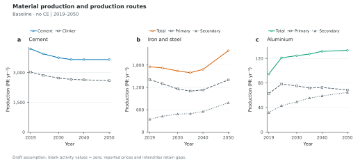
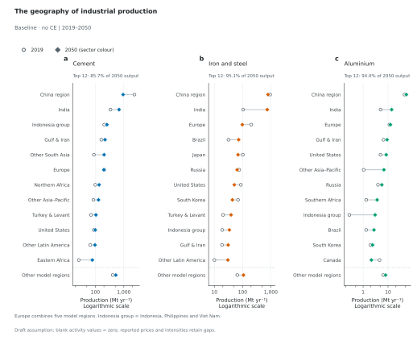
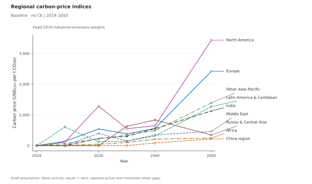
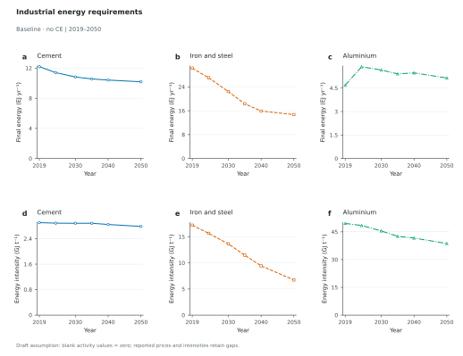
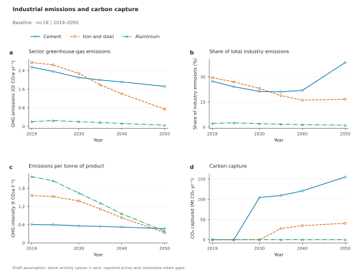
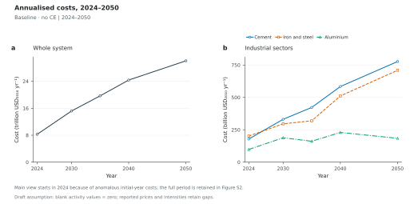
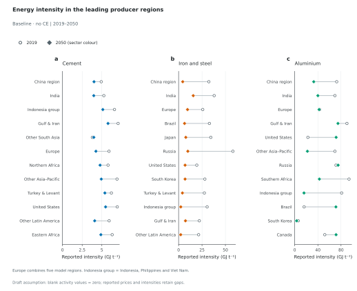
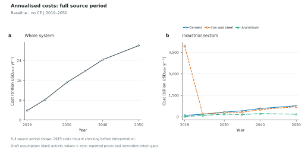

How do global material output and production routes evolve?

Figure 1. Material production and production routes. Baseline · no CE. Global production of (a) cement and clinker, (b) iron and steel, and (c) aluminium. Steel and aluminium totals are primary plus secondary production. Cement and clinker are distinct products and are not added. Each sector has its own vertical scale; markers show the supplied model years. Blank cells and absent regional rows for additive activity variables are provisionally treated as zero; missing prices, costs and reported intensities remain missing. No uncertainty estimates were supplied.
Figure 2
The geography of industrial production
Where is production concentrated, and how does it move between 2019 and 2050?

Figure 2. The geography of industrial production. Baseline · no CE. The 12 largest producer groups in 2050, ranked separately for each sector. The same 2050 cohort and ordering are used for both endpoint years (2019 and 2050). Europe aggregates ENE, ENW, EUE, EUM and EUW; remaining producer groups preserve individual model regions. China denotes the CHN model region (including Hong Kong, Macao and Taiwan). Indonesia group includes Indonesia, Philippines and Viet Nam. Exact memberships accompany the figures. The final row is the unranked sum of all remaining groups, retaining complete global accounting. Open circles show the first year; filled diamonds show the ranking year. Thin connectors indicate endpoint changes, not intervening trajectories. Production axes are logarithmic to make changes visible across producers spanning several orders of magnitude. Blank cells and absent regional rows for additive activity variables are provisionally treated as zero; missing prices, costs and reported intensities remain missing. No uncertainty estimates were supplied.
Figure 3
Regional carbon-price indices
How do carbon-price paths differ across economically meaningful regional groups?

Figure 3. Regional carbon-price indices. Baseline · no CE. 9 disjoint groups cover all 28 model regions. Each line is an index calculated as the weighted mean of model-region carbon prices, using fixed 2019 industrial greenhouse-gas emissions as weights. The weights do not change with decarbonisation or relocation of industry, so changes reflect the price paths. These indices are not uniform regional policies, population-weighted prices, or averages across countries. North America includes the United States, Canada and Mexico; Europe contains the five European model regions; China is the CHN model region. Exact membership and numerical weights are supplied in CSV files. Blank cells and absent regional rows for additive activity variables are provisionally treated as zero; missing prices, costs and reported intensities remain missing. No uncertainty estimates were supplied.
Figure 4
Industrial energy requirements
How do total energy requirements and energy per tonne evolve together?

Figure 4. Industrial energy requirements. Baseline · no CE. Global sectoral final energy (a–c) and derived energy intensity (d–f), with sector columns aligned. Energy sums exactly the carrier-level variables listed in ResultsMetrics.docx, excluding nested fuel subcategories. Global intensity is global final energy divided by global sector production, converted from EJ/Mt to GJ/t. Cement uses cement production; steel and aluminium use primary plus secondary production. Each panel has its own vertical scale. Reported regional intensities, a different source definition, are in Figure S1. Blank cells and absent regional rows for additive activity variables are provisionally treated as zero; missing prices, costs and reported intensities remain missing. No uncertainty estimates were supplied.
Figure 5
Industrial emissions and carbon capture
How do sector emissions, emissions intensity and capture change?

Figure 5. Industrial emissions and carbon capture. Baseline · no CE. Global sectoral (a) greenhouse-gas emissions, (b) share of total industry greenhouse-gas emissions, (c) emissions per tonne of production, and (d) CO₂ capture. Industry shares use Emissions|GHG|Industry as denominator; the three sectors are not assumed to exhaust industry. Emissions intensity is a ratio of global sums. Capture is shown separately and is not subtracted again from reported emissions. GHG emissions and CO₂ capture use their distinct source units. Blank cells and absent regional rows for additive activity variables are provisionally treated as zero; missing prices, costs and reported intensities remain missing. No uncertainty estimates were supplied.
Figure 6
Annualised costs, 2024–2050
How do system and industrial costs evolve?

Figure 6. Annualised costs, 2024–2050. Baseline · no CE. Global annualised (a) whole-system and (b) sector costs, in constant 2010 USD. The system axis uses trillions and the sector axis billions; costs are not stacked or interpreted as an exhaustive system breakdown. The main report shows 2024–2050 to keep later trends legible. Initial-year cost anomalies are not corrected or discarded: the full-period series appear in Figure S2 and the audit identifies negative regional costs. Source cost accounting needs checking before substantive interpretation. Blank cells and absent regional rows for additive activity variables are provisionally treated as zero; missing prices, costs and reported intensities remain missing. No uncertainty estimates were supplied.Supporting figures Appendix · 2 figures
Figure S1
Energy intensity in the leading producer regions
How do energy intensities compare within the same leading-producer cohort?

Figure S1. Energy intensity in the leading producer regions. Baseline · no CE. The 12 largest producer groups in 2050, ranked separately for each sector. The same 2050 cohort and ordering are used for both endpoint years (2019 and 2050). Europe aggregates ENE, ENW, EUE, EUM and EUW; remaining producer groups preserve individual model regions. China denotes the CHN model region (including Hong Kong, Macao and Taiwan). Indonesia group includes Indonesia, Philippines and Viet Nam. Exact memberships accompany the figures. Dots show supplied regional energy intensity, converted to GJ/t. Europe's source intensities are weighted by contemporaneous sector production. These reported intensities use the source definition and differ from the derived global final-energy/production intensities in Figure 4. Missing intensity values remain gaps. Blank cells and absent regional rows for additive activity variables are provisionally treated as zero; missing prices, costs and reported intensities remain missing. No uncertainty estimates were supplied.
Figure S2
Annualised costs: full source period
How do system and industrial costs evolve?

Figure S2. Annualised costs: full source period. Baseline · no CE. Global annualised (a) whole-system and (b) sector costs, in constant 2010 USD. The system axis uses trillions and the sector axis billions; costs are not stacked or interpreted as an exhaustive system breakdown. All years and signed source values are retained. In the supplied baseline export, 2019 steel costs exceed total-system costs, and several regional system costs are negative. This figure makes the anomalous values visible without compressing the main report's later-period trends. Blank cells and absent regional rows for additive activity variables are provisionally treated as zero; missing prices, costs and reported intensities remain missing. No uncertainty estimates were supplied.
Methods, source data and calculation checks
Six main figures tell the report story; Figures S1 and S2 hold regional-intensity detail and full-period costs.
Blank activity values are provisionally treated as zero. This is a draft assumption, not a confirmed export convention. Prices, costs and reported intensities are never zero-filled.
Carbon-price indices use fixed 2019 industrial-GHG-emissions weights. The nine geographic groups partition the 28 model regions without overlap.
Leading producers are selected independently by sector using 2050 total production. The same top-12 cohort is shown at both endpoints. Other model regions preserve the global remainder.
Europe combines ENE, ENW, EUE, EUM and EUW. North America contains USA, CAN and MEX. Regional definitions follow whole model regions, including the territories assigned to them in the mapping.
China is the CHN model region, including Hong Kong, Macao and Taiwan. Indonesia group includes Indonesia, Philippines and Viet Nam. The mapping's ZijieRegion column crosses model boundaries and is not used for aggregation.
Global intensities are ratios of global sums. Reported producer-region energy intensities retain the source definition; Europe's regional intensities are production-weighted. These definitions do not agree in this export.
There are 14 negative regional cost entries. Main costs start in 2024; all source years, including anomalous initial costs, remain in Figure S2 and its data.